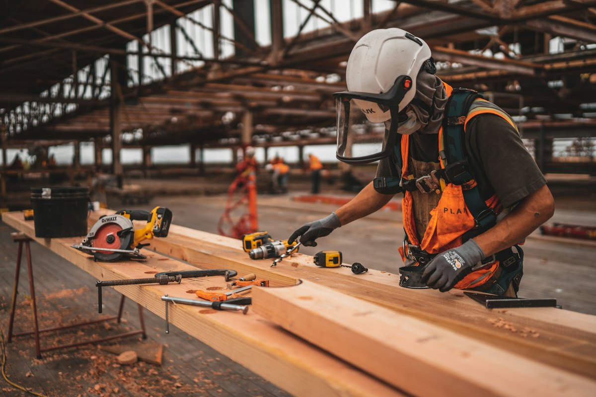

Om- och tillbyggnad
Fler kvadratmeter, ny planlösning eller en inglasad uteplats – vi bygger det som behövs.
Om- och tillbyggnader, reparationer och löpande byggjobb – för villaägare, bostadsrättsföreningar och företag.
Byggservice
Ibland handlar det om en ny altan eller en tillbyggnad. Ibland om en vattenskada som behöver åtgärdas eller ett förråd som ska upp innan vintern. Oavsett storlek tar vi oss an jobbet med samma noggrannhet.
Som generalentreprenör kan vi ta ansvar för hela projektet – planering, material, eventuella underentreprenörer och slutbesiktning – så att du har en enda kontakt genom hela processen.
Det här hjälper vi till med
Fler kvadratmeter, ny planlösning eller en inglasad uteplats – vi bygger det som behövs.
Altaner, trädäck, ramper och trappor i tryckimpregnerat eller ädelträ.
Fukt- och vattenskador, röta, trasiga bjälklag och andra akuta åtgärder.
Byte av panel, vindskivor, takfotsarbeten och mindre takarbeten.
Friggebodar, carportar, staket och insynsskydd.
Selektiv rivning och förberedande arbeten inför ombyggnad.

Generalentreprenad
Vi planerar, beställer material, samordnar eventuella underentreprenörer och håller tidplanen. Du får löpande avstämningar och vet alltid var projektet står.


Som privatperson kan du göra ROT-avdrag på arbetskostnaden för reparation, underhåll, om- och tillbyggnad av ditt hem. Vi drar av beloppet direkt på fakturan och sköter ansökan hos Skatteverket.
Så arbetar vi
Ring, sms:a eller fyll i formuläret. Berätta kort vad du behöver hjälp med.
Vi tittar på jobbet på plats och lämnar en tydlig offert utan dolda kostnader.
Vi utför arbetet enligt plan, håller dig uppdaterad och lämnar en städad arbetsplats.
Gemensam genomgång när allt är klart – och vi finns kvar om något behöver justeras.
Ring eller sms:a oss så bokar vi in ett besök så snart det går. Akuta skador prioriterar vi.
Ja. Vi gör gärna mindre servicejobb – en trasig tröskel är lika viktig för oss som en tillbyggnad.
Det beror på åtgärden och kommunen. Vi hjälper dig reda ut vad som gäller innan vi sätter igång.
Ja, som privatperson kan du göra ROT-avdrag på arbetskostnaden. Avdraget görs direkt på fakturan.
Ring oss eller begär en kostnadsfri offert – vi återkommer så snart vi kan.